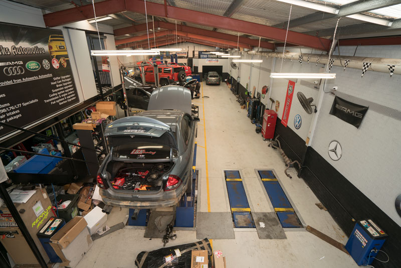

Family-run, independently minded, and quietly meticulous about every car that rolls through the door.

Est. 2002Soner — known to everyone as Sonny — started Autowerks with a simple idea: treat every car like the customer is paying attention to every bolt. Two decades later, that's still how the workshop runs.
Working alongside Dee, the husband-and-wife team has built a workshop trusted by drivers of European prestige, performance and exotic vehicles across Sydney. Many of our clients have been with us for over a decade — they came in once for a service and never bothered going anywhere else.
We've stayed independent on purpose. No dealership upsell. No quotas to hit. Just the right work, on the right car, at the right time.
Parts get swapped only after we know what's actually wrong. We use manufacturer-grade diagnostic equipment, not pattern recognition.
We tell you what your car needs now, what can wait, and what you can safely ignore. No upsell theatre.
European prestige cars need brand-specific equipment and procedures. We've invested accordingly — and we keep investing.
Every dyno tune ends with a verification run. Every service ends with a road test. The work either delivers or it doesn't.
Sonny is the diagnostic mind behind every job. If a car has a personality, he'll find it on the first drive.
Dee runs the front of house and keeps every booking, every quote and every customer call moving on schedule.
Behind Sonny is a small, qualified team trained on European brands and bound to the same standard of work.
Our standards aren't self-awarded. We're members of the bodies that hold Australian workshops accountable.
The MTA represents Australian automotive workshops committed to industry best-practice and consumer protection.
IAME accredits qualified automotive engineers and technicians who meet ongoing professional development standards.
Authorised by NSW Roads & Maritime Services to carry out e-Safety inspections and vehicle identity checks.
Drop by the workshop or send us a note. We'll have a real conversation — no pressure, no script.